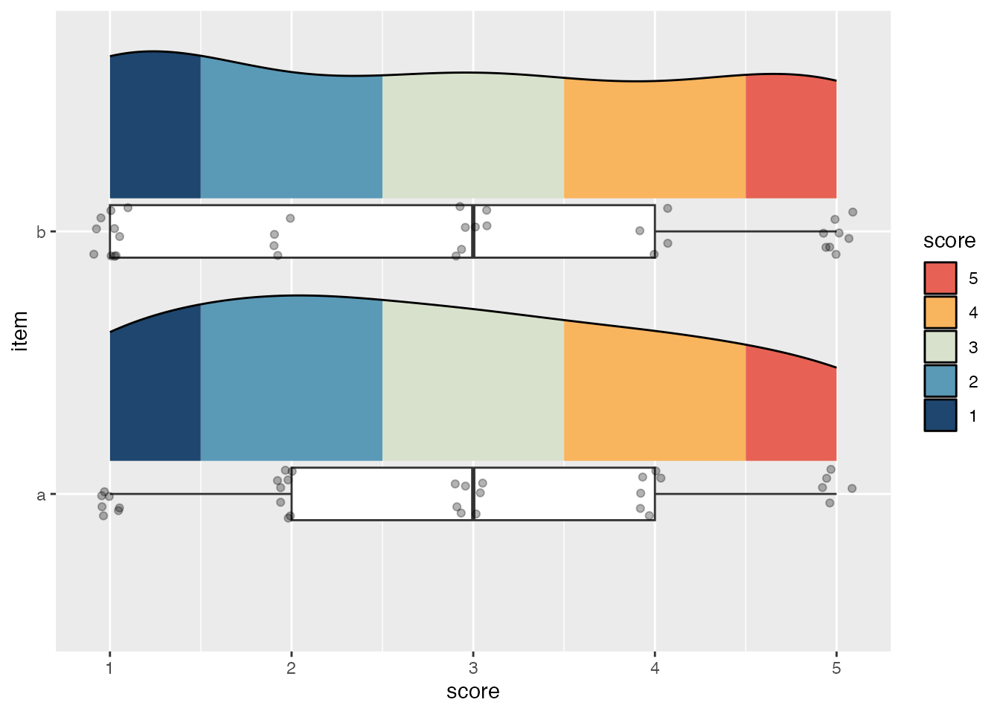
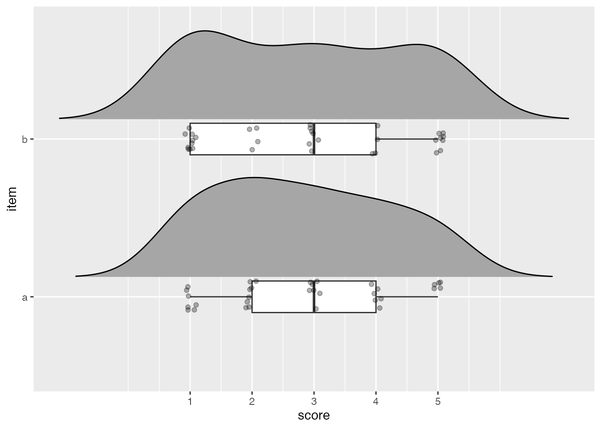
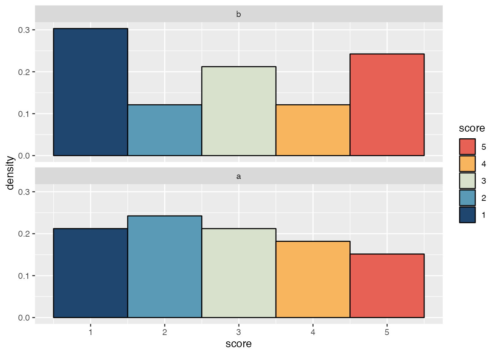
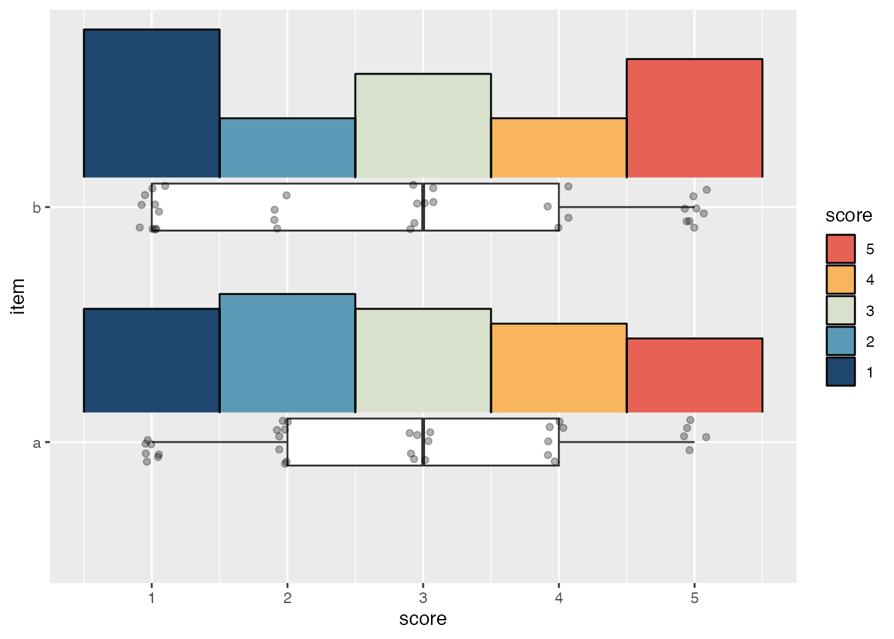

library(ggplot2)
library(ggdist)
library(palettes)
library(forcats)Prerequisites
To access the datasets, help pages, and functions that we will use in this code snippet, load the following packages:
Rationale
Likert scales are a commonly used measurement tool in surveys. A typical Likert scale is made of multiple items measuring respondent’s attitudes towards different statements (e.g., “The prime minister is doing a good job”, “The senate is doing a good job”, etc.).
Attitudes towards each statement are then measured with a rating scale like:
Please indicate how much you agree or disagree with each of these statements:
Strongly disagree Somewhat disagree Neither agree nor disagree Somewhat agree Strongly agree The prime minister is doing a good job. 1 2 3 4 5 The senate is doing a good job. 1 2 3 4 5
Because items in a Likert scale are numeric but discrete, a density histogram is an ideal way to visualize the distribution of responses to each item (as opposed to the density curve typically used in raincloud plots with continuous data).
Why not a density curve?
While it is possible to use a density curve, doing so should make it immediately obvious why it isn’t a great approach for discrete numeric data like this:
- The density curve masks notable differences in density between different scores
- The outermost fills in the density curve are cut off when it is trimmed to the range of the input data
- The density curve goes far beyond the possible values of the data when it isn’t trimmed1
Code
ggplot(likert_scores, aes(x = score, y = item)) +
stat_slab(
aes(fill = cut(after_stat(x), breaks = breaks(x))),
justification = -.2,
height = 0.7,
slab_colour = "black",
slab_linewidth = 0.5,
trim = TRUE
) +
geom_boxplot(
width = .2,
outlier.shape = NA
) +
geom_jitter(width = .1, height = .1, alpha = .3) +
scale_fill_manual(
values = pal_ramp(met_palettes$Hiroshige, 5, -1),
labels = 1:5,
guide = guide_legend(title = "score", reverse = TRUE)
)
ggplot(likert_scores, aes(x = score, y = item)) +
stat_slab(
justification = -.2,
height = 0.7,
slab_colour = "black",
slab_linewidth = 0.5,
trim = FALSE
) +
geom_boxplot(
width = .2,
outlier.shape = NA
) +
geom_jitter(width = .1, height = .1, alpha = .3) +
scale_x_continuous(breaks = 1:5)
trim = TRUE
trim = FALSEHowever, each of these problems is easily solved by using a density histogram instead.
Histogram raincloud plots
First make some data.
set.seed(123)
likert_scores <- data.frame(
item = rep(letters[1:2], times = 33),
score = sample(1:5, 66, replace = TRUE)
)It’s straightforward to make density histograms for each item with ggplot2.
ggplot(likert_scores, aes(x = score, y = after_stat(density))) +
geom_histogram(
aes(fill = after_stat(x)),
bins = 5,
colour = "black"
) +
scale_fill_gradientn(
colours = pal_ramp(met_palettes$Hiroshige, 5, -1),
guide = guide_legend(title = "score", reverse = TRUE)
) +
facet_wrap(vars(fct_rev(item)), ncol = 1)
However, the density histograms in this plot can’t be vertically justified to give space for the box and whiskers plot and points used in a typical raincloud plot. For that we need the stat_slab() function from the ggdist package and a small helper function to determine where to put breaks in the histogram.
#' Set breaks so bins are centred on each score
#'
#' @param x A vector of values.
#' @param width Any value between 0 and 0.5 for setting the width of the bins
breaks <- function(x, width = 0.49999999) {
rep(1:max(x), each = 2) + c(-width, width)
}The default slab type for stat_slab() is a probability density (or mass) function ("pdf"), but it can also calculate density histograms ("histogram"). To match the appearance of geom_histogram(), the breaks argument needs to be given the location of each bin’s left and right edge; this also necessitates using cut() with the fill aesthetic so the fill breaks correctly align with each bin.
ggplot(likert_scores, aes(x = score, y = item)) +
stat_slab(
# Divide fill into five equal bins
aes(fill = cut(after_stat(x), breaks = 5)),
slab_type = "histogram",
breaks = \(x) breaks(x),
# Justify the histogram upwards
justification = -.2,
# Reduce the histogram's height so it doesn't cover geoms from other items
height = 0.7,
# Add black outlines because they look nice
slab_colour = "black",
outline_bars = TRUE,
slab_linewidth = 0.5
) +
geom_boxplot(
width = .2,
# Hide outliers since the raw data will be plotted
outlier.shape = NA
) +
geom_jitter(width = .1, height = .1, alpha = .3) +
# Cutting the fill into bins puts it on a discrete scale
scale_fill_manual(
values = pal_ramp(met_palettes$Hiroshige, 5, -1),
labels = 1:5,
guide = guide_legend(title = "score", reverse = TRUE)
)

Michael McCarthy
Thanks for reading! I’m Michael, the voice behind Tidy Tales. I am an award winning data scientist and R programmer with the skills and experience to help you solve the problems you care about. You can learn more about me, my consulting services, and my other projects on my personal website.
Session Info
─ Session info ───────────────────────────────────────────────────────────────
setting value
version R version 4.2.2 (2022-10-31)
os macOS Mojave 10.14.6
system x86_64, darwin17.0
ui X11
language (EN)
collate en_CA.UTF-8
ctype en_CA.UTF-8
tz America/Vancouver
date 2023-01-20
pandoc 2.14.0.3 @ /Applications/RStudio.app/Contents/MacOS/pandoc/ (via rmarkdown)
quarto 1.2.313 @ /usr/local/bin/quarto
─ Packages ───────────────────────────────────────────────────────────────────
package * version date (UTC) lib source
forcats * 0.5.2 2022-08-19 [1] CRAN (R 4.2.0)
ggdist * 3.2.1 2023-01-18 [1] CRAN (R 4.2.2)
ggplot2 * 3.4.0 2022-11-04 [1] CRAN (R 4.2.0)
palettes * 0.1.0 2022-12-19 [1] CRAN (R 4.2.0)
sessioninfo * 1.2.2 2021-12-06 [1] CRAN (R 4.2.0)
[1] /Users/Michael/Library/R/x86_64/4.2/library/__tidytales
[2] /Library/Frameworks/R.framework/Versions/4.2/Resources/library
──────────────────────────────────────────────────────────────────────────────Footnotes
It also makes it difficult to get the fill breaks right, hence the lack of any fill colours in the
trim = FALSEexample.↩︎
Reuse
Citation
BibTeX citation:
@online{mccarthy2023,
author = {Michael McCarthy},
title = {Histogram Raincloud Plots},
date = {2023-01-19},
url = {https://tidytales.ca/snippets/2023-01-19_ggdist-histogram-rainclouds},
langid = {en}
}
For attribution, please cite this work as:
Michael McCarthy. (2023, January 19). Histogram raincloud
plots. https://tidytales.ca/snippets/2023-01-19_ggdist-histogram-rainclouds
Comments